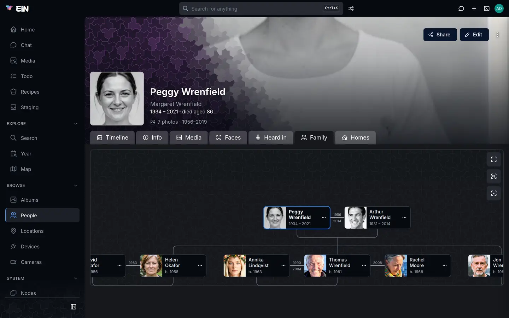

The demo at https://demo.einhq.eu is an EiN on the internet that anyone can look around without installing anything. It has the Archive installed and holds the archive of the Wrenfields, a family that does not exist: their photos, home videos, recordings, letters and travels over four generations. This page says what you can do there, what happens to it every night, and which of its pictures and voices are real and which are generated.
Look around without signing in
Open https://demo.einhq.eu and EiN takes you straight to Home, as a visitor: you need no account, and nothing asks who you are. From the sidebar you can open every page a reader has:
- Media, Year and Map, the family's photos, videos, recordings and documents by date and by place. Open one to see who is in it, where and when it was taken, the text read from a letter or the words spoken in a recording.
- Albums, People, Locations and Cameras, and a person's family tree on their page.
- Search, in your own words, such as
sailingorwedding, and the finder (Ctrl+K). - Statistics, and Documentation, these pages as EiN shows them offline.
Finding your way around shows the Web UI page by page, and the Archive's pages what each of its pages does.
A visitor reads and changes nothing: uploading, editing, sharing, the terminal and the settings ask you to sign in, and the demo has no public account. The demo is updated now and then, not with every change to EiN, so it may be a little behind what these pages describe. The assistant is not installed, so there is no Chat. To try those parts, install EiN on your own machine; the same pages are there, with your own family in them.
Every night it starts again
Every night at 03:30 Central European Time (02:30 in the UK) the demo is put back as it was: its database and its files are replaced by a copy kept for the purpose, and the accounts get their passwords back. Whatever was changed during the day is gone, and every visitor finds the same archive. For a few minutes while that happens, the demo does not answer.
The Wrenfields, an invented family
Nobody in the demo exists, and nothing in it comes from a real family's archive. The Wrenfields are about twenty people over four generations, from grandparents married in the 1950s to children born in the 2010s: a home in London, a cottage in Cornwall, a branch of the family in Wellington, a trip to Boston and a sailing holiday in the Stockholm archipelago. Their story, who married whom, who was born when and who was where, was written for the demo, and every picture, recording and document of the family follows it, so that EiN has a real job to do: recognise the same person at 8 and at 60, tie a voice to a name, place a photo on a trip.


The places are real, and so is the map, © OpenStreetMap contributors. No home points at a real house: each is an area a few hundred metres across, centred on a park or a street.
What is real and what is generated
The archive mixes real material, none of it showing a person, with material made for it:
| What | Where it comes from |
|---|---|
| Photos without people: streets, landscapes, boats, food | Real. Freely licensed photos from Wikimedia Commons and camera RAW samples from raw.pixls.us, each kept with the camera details it was taken with. Any photo with a face in it, even a passer-by's, was left out. |
| The family's faces at every age, and every picture with them in it: the old prints and slides, their weddings, holidays and homes | Generated, whole, settings included, by an open image model (FLUX.2 [klein]), each person from portraits generated for them first. |
| The family's voices, in the recordings and the home videos | Generated by open text-to-speech models (Kokoro-82M in English, Chatterbox Multilingual in Swedish), from voices that belong to no real person. |
| The home videos | Generated: the people in them animated, talking and listening, by an open video model (StableAvatar) from a generated first frame of each and the recording's generated voices; the videos nobody speaks in, and the movies of the Live Photos, animated from the family's generated pictures by another (Wan2.2). |
| Letters, cards and other documents, and the GPS tracks of the trips | Written for the demo, from the story. |
Every generated file says so inside itself, as the IPTC standard marks a picture made by a trained
model (Iptc4xmpExt:DigitalSourceType is trainedAlgorithmicMedia), so any program that reads it
can tell. Sound behind a voice, a room or a street, is generated or freely licensed in the same way.
The real photos are the work of the people who took them and keep their own licences: Creative Commons CC0, the public domain, or a CC BY licence, which asks for the author to be named. Each one is credited, with its author, its licence and a link to where it was published, in ATTRIBUTION.md. Everything written or generated for the demo is dedicated to the public domain (CC0 1.0).
Where to go next
- How EiN works explains what you saw in the demo: nodes, the tree and the pipelines that found the faces and read the letters.
- Install EiN puts EiN on your own Linux machine with one command.
- The Archive covers the pages of the demo one by one.